Descubre Xochimilco desde el agua
Recorre los canales de Xochimilco y descubre una forma diferente de conocer las actividades y proyectos de este territorio chinampero.
~~~~~~~~~~~~~~~~~~~~~~~~~~~~~~
Recorrer para endenderRecorrer para entender
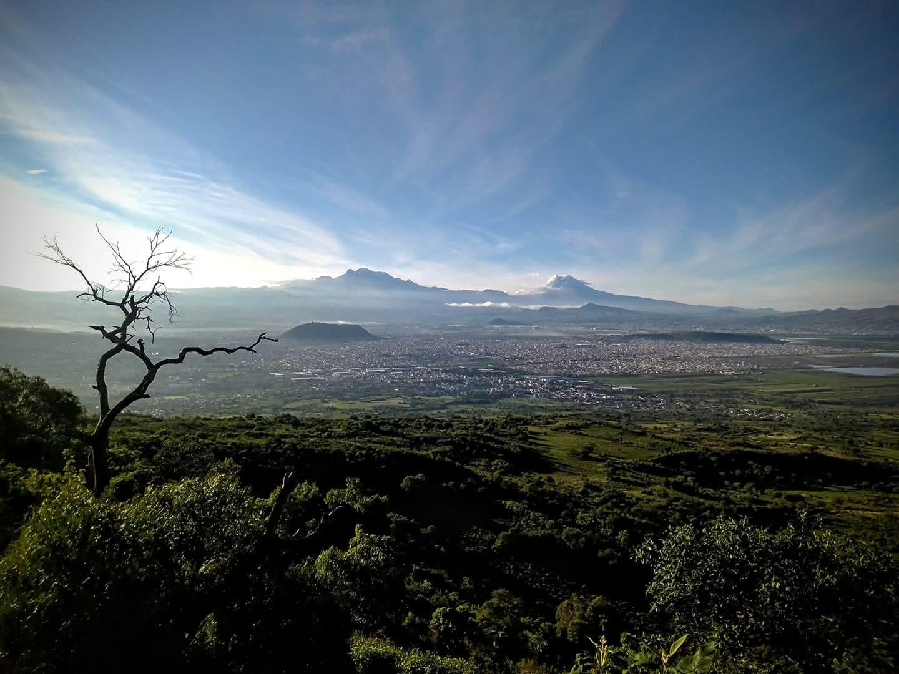
Historia y territorio
Usamos mapas, relatos históricos y lectura del paisaje para comprender cómo ha cambiado Xochimilco y cómo se relacionan sus canales, chinampas y zonas urbanas.
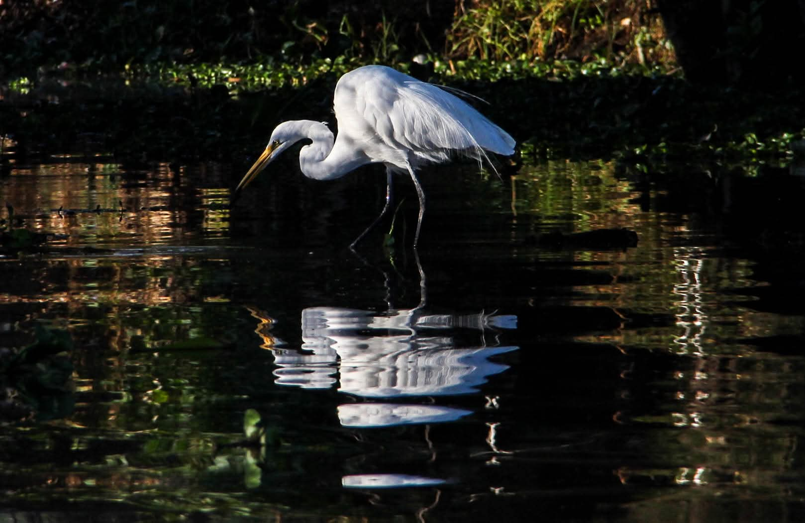
Humedal y biodiversidad
Observamos aves, vegetación y otras especies que forman parte del humedal, entendiendo que la riqueza de Xochimilco va mucho más allá del ajolote.
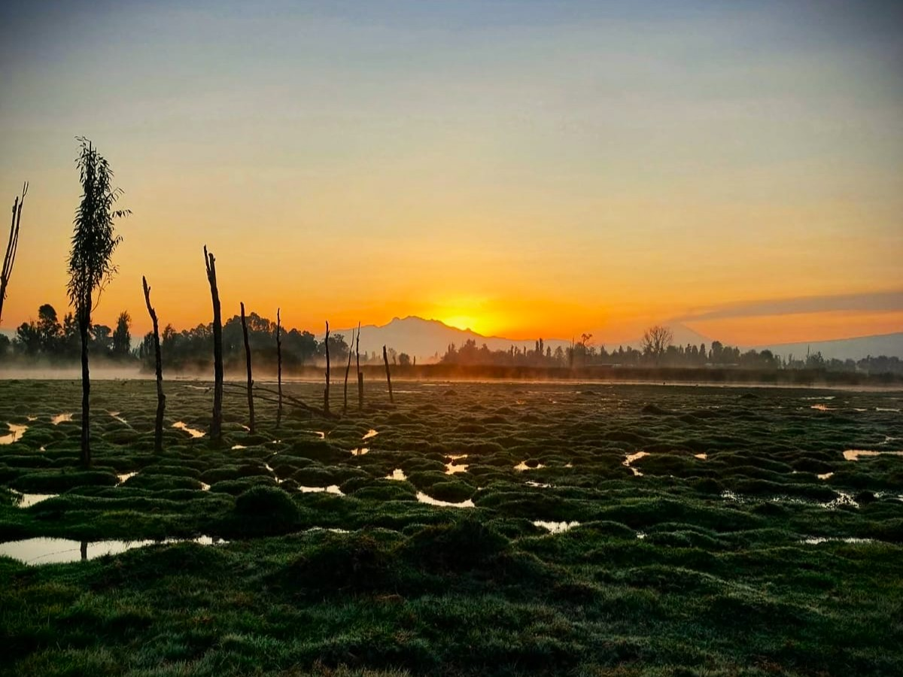
Vida chinampera
Conocemos la vida cotidiana dentro de los canales: personas que trabajan, transportan materiales, llevan a sus hijos a la escuela y mantienen viva la chinampa.
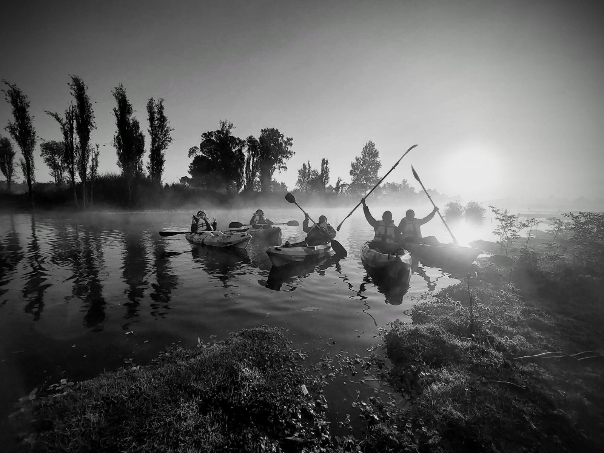
Experiencias en la chinampa
Algunas actividades permiten conocer procesos como el chapín, la siembra, el manejo del lodo y la limpieza de canales, entendiendo cómo se sostiene este territorio.
Nuestros recorridos no buscan solamente mostrar un amanecer o conseguir una buena fotografía.
Navegamos Xochimilco para comprender el territorio: sus canales, sus chinampas, su historia, su biodiversidad y la vida cotidiana de quienes todavía habitan y trabajan este paisaje.
Durante unas horas recorremos apenas una pequeña parte de un sistema mucho mayor. El mapa nos ayuda a entender dónde estamos y a dimensionar la extensión del territorio que permanece conectado por el agua.
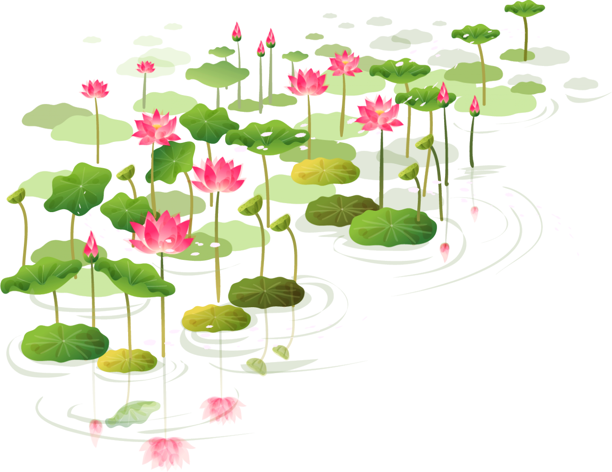
Galería
Xochimilco desde el agua: paisaje, biodiversidad, trabajo chinampero y vida cotidiana.
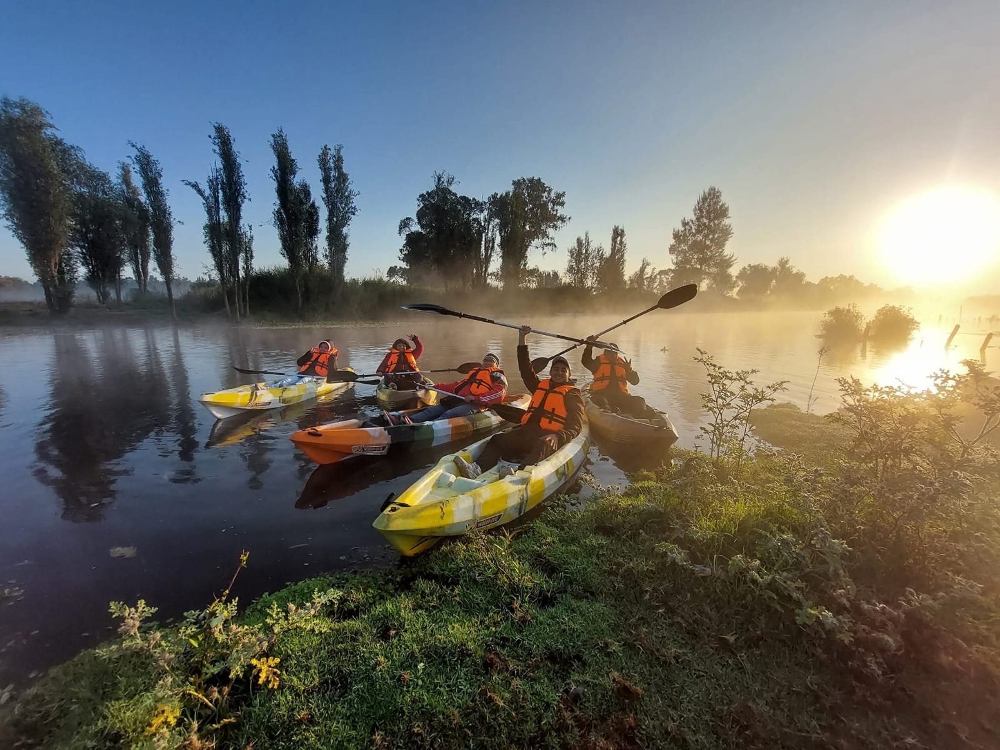
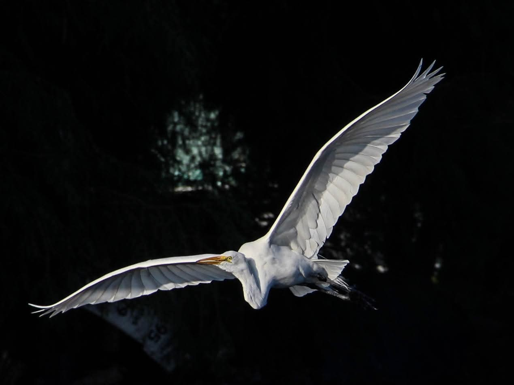
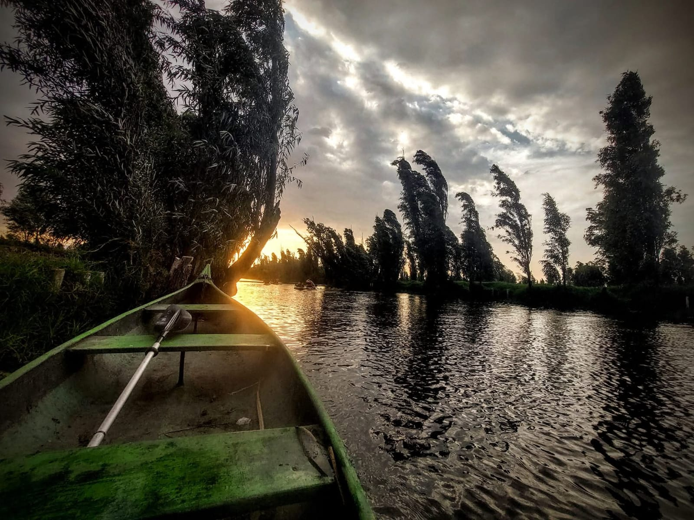
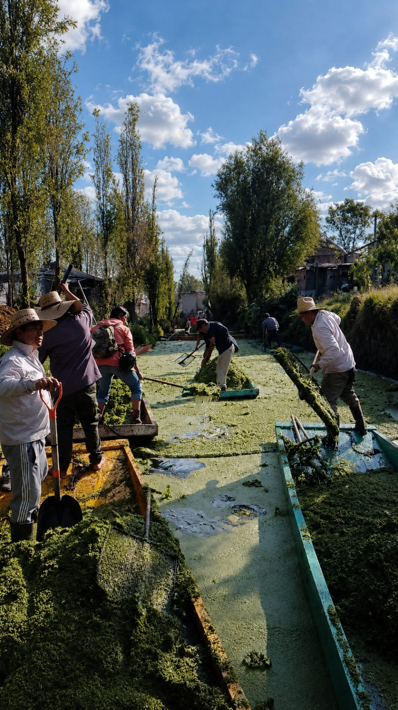
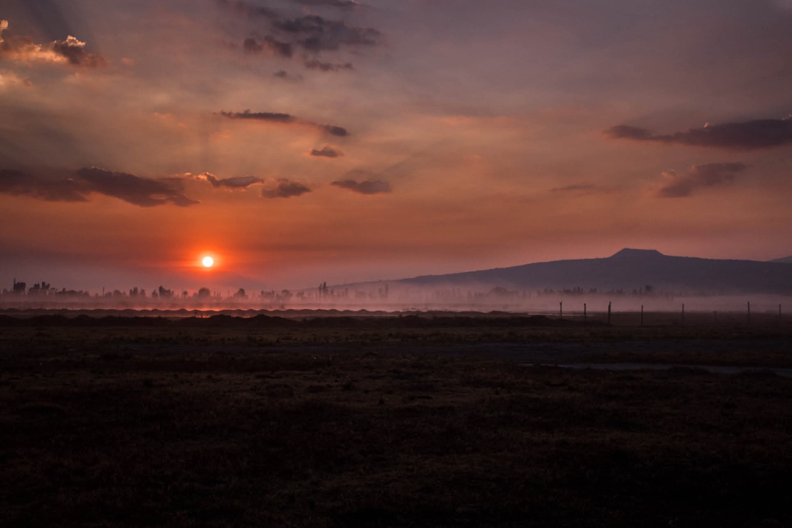
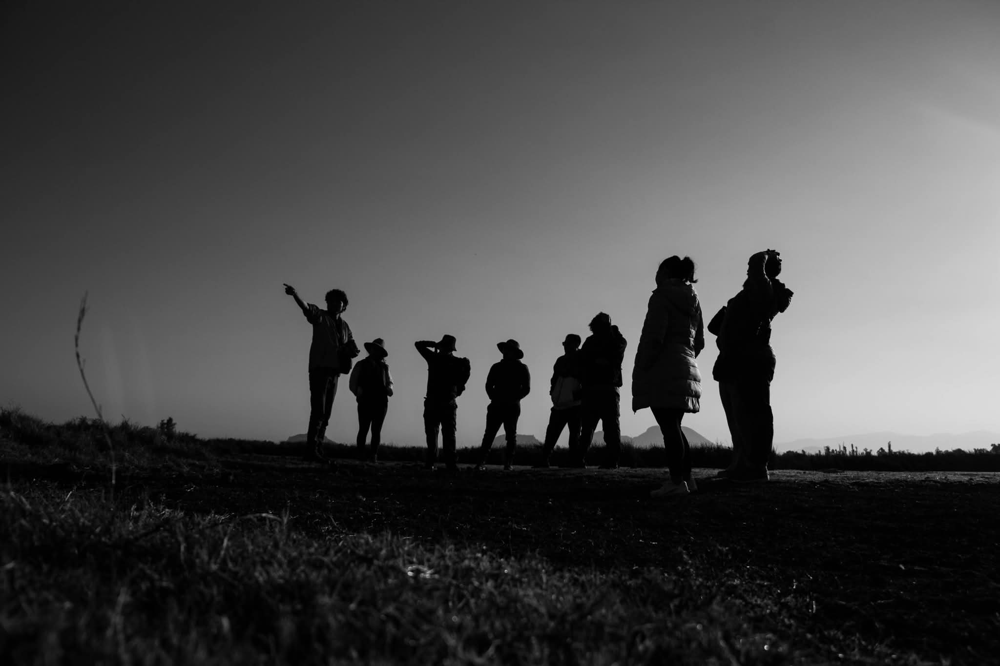
Nosotros
Somos un proyecto que recorre Xochimilco desde el agua para conocer, documentar y compartir su historia, su biodiversidad y la vida cotidiana de sus habitantes.
Contacto
Si quieres conocer nuestros recorridos o participar en alguna actividad, ponte en contacto con nosotros.